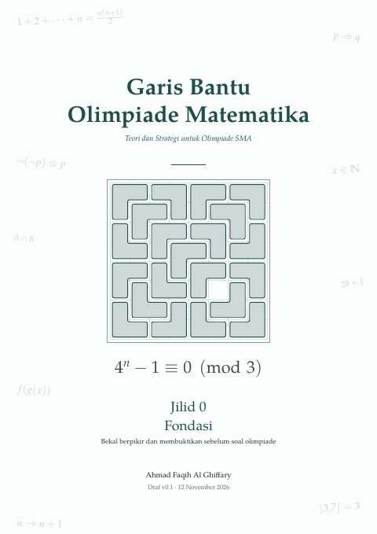
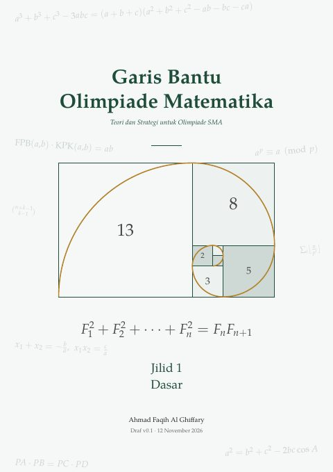

Buku persiapan OSN Matematika SMA karya Ahmad Faqih Al Ghiffary. Buku ini ditujukan untuk siswa yang belajar mandiri, dan dapat dipakai guru sebagai bahan ajar.

Jilid 0 · Fondasi
Bekal sebelum memasuki dunia olimpiade matematika. 81 hlm.
Mulai di sini Unduh PDF
Jilid 1 · Dasar
Aljabar, kombinatorika, teori bilangan, geometri dasar. 398 hlm.
Unduh PDFBelum tersedia
Jilid 2
Belum tersedia
Jilid 3
Menemukan kesalahan? Isi formulir laporan. Koreksi yang sudah dicek tertulis di halaman ralat.